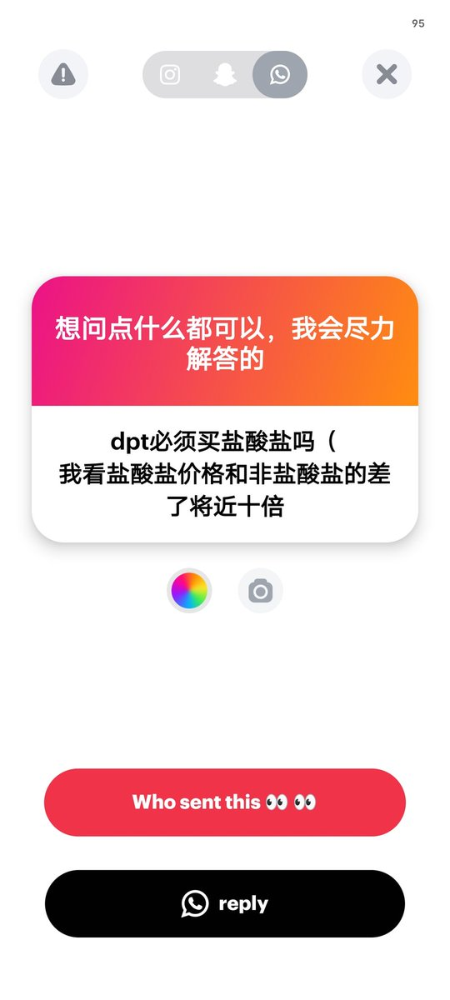

Shikieiki Yamaxanadu
@_Shikieiki
7558的是DPT盐酸盐
61的应该是游离碱吧
适宜的服用形式不一样 请看我附的这个回答 请根据服用形式决定买哪一种吧
(好像是鼻吸比较多吗)(错误请指正)

Shikieiki Yamaxanadu
@_Shikieiki
口服的话差别不大
游离碱形式的DPT没法鼻吸 盐酸盐形式的鼻吸吸收效率高
如果是加热吸入要游离碱
肌肉注射要盐酸盐形式 https://t.co/ZCmiGqz3aw